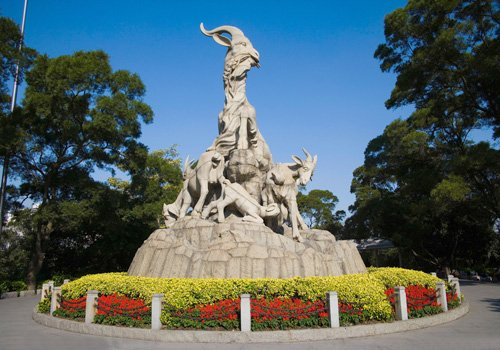

When most northerners travel to Guangzhou, they will almost expect a remark calling the place 'cultureless'. Fair or not, its isolation from the rest of 'typical China' by mountainous topography and early exposure to the outside world has resulted in its unique way of lifestyle, liberal ideas, distinctive cuisine and tremendous wealth. It is no surprise that Guangzhou is a cradle of many reforms and revolutions that changed the fate of China forever. Today Guangzhou still unveils many republic-era sights that help travelers understand modern Chinese history.
Founded in 214 BC, this capital of the richest province is always a mix of new and old. It not only boasts some of the oldest temples in China, a millenarian-old park, an imperial tomb of a southern kingdom and complete preservation of colonial villas and church on Shamian, but it also serves as a showcase of futuristic architectures and autopilot metro on Zhujiang New Town.
Following shows some famous attractions of Guangzhou :)
Yuexiu Park
Yuexiu Park is the largest comprehensive park in Guangzhou, covering an area of 860,000 square meters. It is a delicate card for Guangzhou, and tourists who come to Guangzhou for the first time should pay a visit to Yuexiu Park in order to feel the long history of the city. The building of Yuexiu Park was originally proposed by Sun Yat-sen in modern times. After the liberation of Guangzhou, the people's government turns it into a huge and modern park that is listed as the Eight Scenic Spot of Guangzhou. Zhenhai Tower and Five Rams Stone Sculpture, which are considered as two landmarks of Guangzhou, are also located in Yuexiu Park.

Baiyun Mountains
Báiyún is Mandarin Chinese for "White Clouds", derived from views of the mountain's peaks shrouded in mist during late Spring or after a rain. Its former English name, Pakwan, is a form of the Cantonese pronunciation of the same name. In English, it is also known as, Mount Baiyun, or the "Baiyun Mountains".
Baiyun is a mountain range located 15 kilometers (9 mi) north of central Guangzhou, made up of about 30 peaks, with an area of 28 km2 (11 sq mi). It is forms the southern end of the Dayu Mountains, themselves part of the Nanling Mountains. Baiyun's highest point is Moxing Peak (“Star-scraping Peak”) at 382 meters (1,253 ft) above sea level. Vegetation covers over 95% of the area of Baiyun Mountain, enabling it to absorb 2800 tons of carbon dioxide and release 2100 tons of oxygen each day.
Canton Tower
Canton Tower, or Guangzhou Tower, formally Guangzhou TV Astronomical and Sightseeing Tower, is a 595.7 metres (1,954 ft) tall multi-purpose observation tower in the Haizhu District of Guangzhou, Guangdong, China. The tower was topped out in 2009 and it became operational on 29 September 2010 for the 2010 Asian Games. The tower briefly held the title of tallest tower in the world, replacing the CN Tower, before being surpassed by the Tokyo Skytree. It was the tallest structure in China prior to the topping out of Shanghai Tower on 3 August 2013. It is now the second tallest tower and the fifth-tallest freestanding structure in the world.
Pearl River Cruise
One can not be considered to have visited Guangzhou if he hasn't cruised the scenic Pearl River. At 2,214 kilometers (about 1,376 miles) long, the Pearl River is the third largest river in China, and the views along the river in Guangzhou City are charming and gentle. Historical sites and unique architecture scattered along the river are numerous as well as great reflections of the Guangzhou culture. Among them are architectures in Shamian where converge a number of ancient architectures from various countries, the White Goose Pool that is one of the eight most famous scenes in Guangzhou, and ten characteristic bridges.
Compared with the daytime cruise on the river, the night cruise is even more fascinating under the sparkling lights. It starts from the White Goose Pool and ends at the Guangzhou Bridge in the east and Baihedong (White Crane Cave) in the south. This section offers visitors vistas such as 'Night Moon over the Goose Pool' and 'Red Heart of the Pearl River'. Every visitor will be captivated by the beauty of the Pearl River during this two-hour evening cruise.